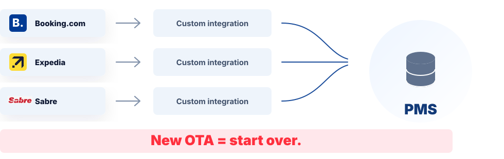
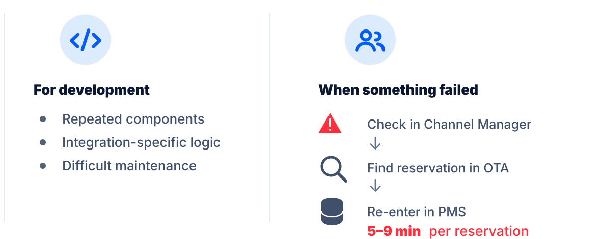
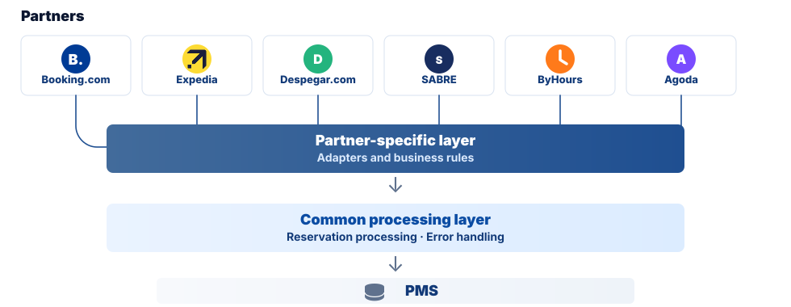
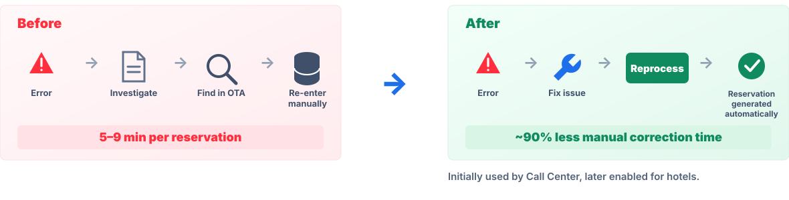

City Express · Product Strategy
Building a distribution platform that could scale
Redesigning the Channel Manager around a reusable foundation to speed up integrations, reduce operational friction, and support new business models.
Role: Product strategy, architecture definition & delivery leadership

01
The challenge
Growth was exposing the limits of the architecture.
Each new online travel agency (OTA) added development effort, maintenance complexity, and more operational risk for a small technology team.

02
Understanding the problem
The problem wasn't just integration speed.
The same integration-specific architecture that slowed development also made reservation failures harder for Call Center and hotel teams to recover.

03
The strategic move
Separate what changes from what should stay common.
Instead of rebuilding each integration, I redesigned the architecture so partner-specific logic could change without disrupting the processing shared across channels.
One shared foundation, with only the partner-specific logic changing at the edge.

04
Operational redesign
A failed reservation shouldn't become a manual workflow.
I redesigned the recovery flow so teams could fix the underlying issue and reprocess the reservation instead of rebuilding it manually across systems.
The goal wasn't only to make recovery faster; it was to remove unnecessary manual reconstruction from the workflow.

05
Results and what it enabled
Less complexity to maintain. More flexibility to grow.
The new architecture also made it possible to support new distribution models, including ByHours hourly bookings and GDS corporate rates, with fewer PMS changes.